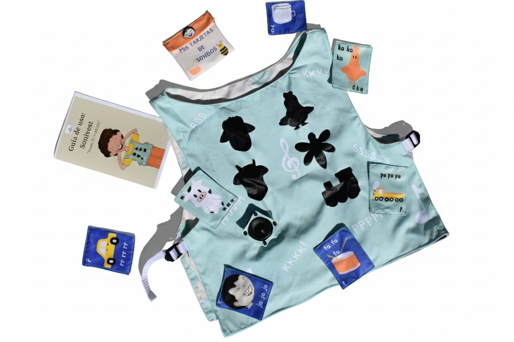
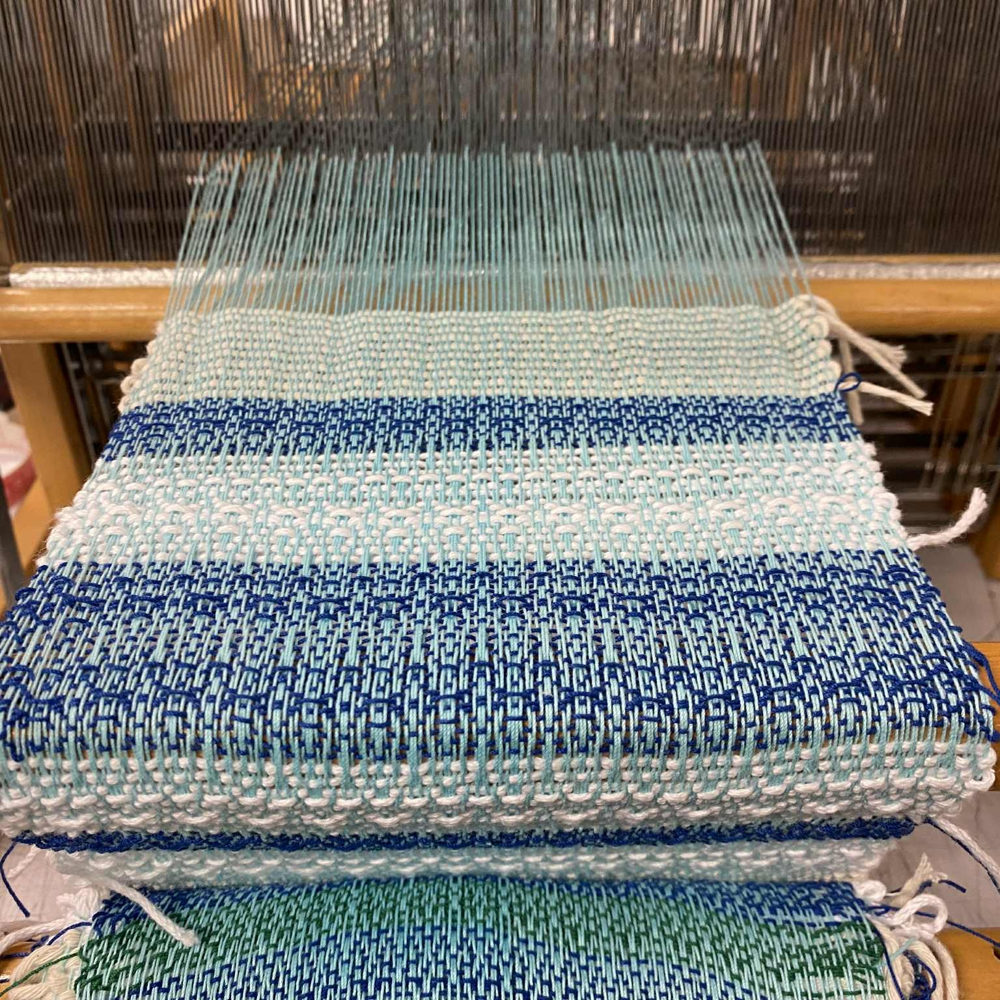

Stellar Vest
Stellar Vest
Vest with a proximity sensor and optical fiber that lights up when someone approaches.
- Year
- 2025
- Technique
- E-textile with optical fiber
- Materials
- Optical fiber, LED, polyester, conductive thread
- Type
- Fab Academy final project

Knitwear Collection
Interactive Vest for Children with Down Syndrome
Prototype of an interactive electronic vest for children with Down syndrome.
 Knitwear Collection
Knitwear Collection
A collaborative knitwear collection for children.
- Year
- 2025
- Technique
- Knitting
- Location
- Ibero Puebla
- Type
- Textile · Collaborative project

Woven Fabric Sample Book
Plain, twill and satin weave samples, plus free designs.
- Year
- 2023
- Technique
- Loom weaving
- Weaves
- Plain, twill, satin
- Type
- Textile
 Upcycling Collection
Upcycling Collection
Customized denim and accessories made from reclaimed scraps.
- Year
- 2024
- Technique
- Upcycling
- Materials
- Reclaimed denim
- Type
- Textile
 Baby Nests for VIFAC Puebla
Baby Nests for VIFAC Puebla
Baby nests made with donated fabric for VIFAC Puebla.
- Year
- 2023
- Technique
- Textile product design
- Partner
- VIFAC Puebla
- Type
- Textile · Collaborative project
 Futuristic Trend Report
Futuristic Trend Report
A trend report where organic forms meet advanced technology.
- Year
- 2024
- Technique
- Trend research
- Tools
- 3D-printed textures
- Type
- Digital
 Brand Creation
Brand Creation
A textile brand inspired by the depth of nature.
- Year
- 2024
- Technique
- Branding
- Inspiration
- Nature
- Type
- Textile